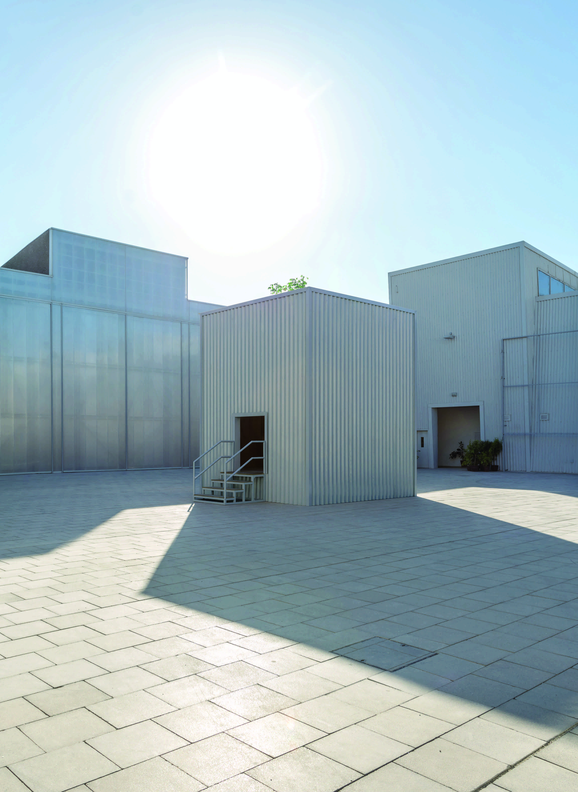

Under, by artist Hale Tenger and guest curated by Mari Spirito opens in Alserkal Avenue
Under, by artist Hale Tenger and guest curated by Mari Spirito opens in Alserkal Avenue
The public intervention commissioned by Alserkal Programming is on show until 31 May

Image: Hale Tenger, Under, 2018, mixed media installation. Audio: Serdar Ateşer, Electro/acoustic consultant: Hakan Kurşun (www.pbm.com.tr),
Dubbing artist: Ceren Türkmenoğlu. Commissioned by Alserkal Programming. Photo credit: Musthafa Aboobacker, courtesy Green Art Gallery, Dubai, Galeri Nev, Istanbul and Alserkal Programming, Dubai.
Dubai, United Arab Emirates
Under, the public intervention by artist Hale Tenger, guest curated by Mari Spirito, opened today in The Yard in Alserkal Avenue, during Art Week. The 18th commission by Alserkal Programming in three years, Under is a look at learned behaviour, on intimate and expanded levels. The commission is presented as a freestanding structure made from corrugated metal, mimicking Alserkal Avenue’s existing buildings.
Alserkal Programming was founded by Abdelmonem Bin Eisa Alserkal in 2015 with a mandate to support artists whose projects are collaborative, participatory, and ephemeral. Commenting on Alserkal Programming’s latest commission, Abdelmonem said, “The core of Alserkal Programming’s ethos is to bring the richness and diversity of our region’s contemporary art scene to the global stage, so that we can build essential cultural bridges within the region and from the region to the world.”
The choice of Tenger’s materials means that there is a moment where Under blends in with its surroundings. From the outside it looks like everything else in The Yard—an ordinary building among many in the warehouse district. This is not by chance. The external aspect of this work brings up considerations of systems and power structures that are in place now and have been in place for generations. Since these systems are so deeply ingrained in our societies, in our regions, and in our world, they are undetectable, permeating everything, working silently.
Once visitors enter Under, another world is put forth, an intimate stage shared with a single tree. There is no roof on Tenger’s structure, so this beautiful green tree stretches up towards a clear open sky. This is an immersive space, one that the viewers do not just look at—we participate in this artwork, we become part of it. Inside Under, the viewer and the tree are immersed in sound, which Tenger created with her long-time collaborator, musician Serdar Ateşer. The first layer of sound is that of a bird, perhaps two birds, flying fast and close. The narrative written by Tenger is conveyed through the sound of a woman’s voice.
Under originates from Tenger’s memory of a fictional narrative that describes an ancient hunting ploy used by aristocrats. Nets were set in the woods much earlier than the hunting date, stretching low throughout the forest so that the birds became accustomed to living under the nets, adapting by only flying low. Once the nets were removed, the birds would no longer fly high, as if they had forgotten, thus becoming easy prey for the noble hunting parties. This practice continues today with tens of millions of game birds being bred at farms set in nature with nets.
The physical and psychological experience of Hale Tenger’s installation touches on many aspects of human behaviour and systems of control, social as well as civic. Under is about the feeling of being pushed down and coerced, and the normalisation of those feelings. The installation’s experiential nature brings up associations via sensations—what it feels like to be in Tenger’s closed-in structure; what it feels like to have the sensation of birds flying low around your head; what it feels like to have a net separate you from the sky. Human beings are highly adaptable; it is a survival mechanism. The processes of behaviour modification are slow; they take advantage of this adaptability through reinforcement of specific actions, to condition people into seeing and interacting with the world in a specific way. This work expresses a feeling that is shared from Tenger’s home in Istanbul, to its site in Dubai, as well as across global contemporary societies.
In order for any change in long-standing systems or structures to occur, first the act of recognising them as such needs to be acknowledged. Even to the smallest degree. This will shift perspective, allowing alternate ideas to co-exist. Hale Tenger’s installation asks, “How have we adapted to the conditions of our time?” and “If birds can forget to fly high in the sky, what have we humans forgotten?”
“Public interventions such as Under, not only spark critical dialogue, but they serve as a stepping stone in evolutionary thinking. It was a natural progression to open up our programme for established and respected curators, such as Mari Spirito, considering her experience in curating site-aware installations globally, her work in the region, and her work with not-for-profit initiatives,” says Vilma Jurkute, Director of Alserkal Avenue, elaborating on the decision to work with a guest curator.
Tenger is an Istanbul-based, multi-disciplinary artist, who most recently showed Balloons on the Sea, 2011, at the 57th Venice Biennale. Under, is her first major commission in the UAE and her first outdoor intervention in almost a decade. Mari Spirito is Founder and Curator of Protocinema, a non-profit organisation based between Istanbul and New York.
Under will be on show from 19 March to 31 May 2018 in The Yard, Alserkal Avenue, Dubai, United Arab Emirates.
Press contact:
Charlotte York
Communications Manager, Alserkal Avenue
+971 56 418 7999
charlotte@alserkalavenue.ae
Editor’s Notes
About Alserkal Programming
Established in 2015, Alserkal Programming is a platform for exhibitions, public art commissions, performances, films, talks and workshops that critically and creatively investigate themes pertinent to the region's arts community. The initiative was started by Abdelmonem Bin Eisa Alserkal, founder of Alserkal Avenue and Concrete. Together, these programmes provide a platform to support the development of new ideas, open dialogue and collaboration across disciplines. With a view to working primarily with artists living and working in the MENASA region, Alserkal Programming has a mandate to support artists whose projects are collaborative, participatory, and ephemeral.
About Hale Tenger
In her wide range of production Hale Tenger creates three-dimensional narratives inspired by diverse historical, political and psychosocial references. Built by an unconventional use of materials, audio and video, her works focus on presence and experience, a pivotal element in her practice. By operating with the qualities of mood, sound, texture and affect, her installations, whether creating an uncanny atmosphere or a meditative one, trace out the relationship between presence and absence, material and intelligible. Tenger's narratives often oscillate between sameness and alterity, between fragility and persistence. The signs of oppression and repression therefore are recuperated by the signs of resistance and transition for healing and change. Audio is integrated into most of her works in various forms, either as an exclusive music, as a narrative or an arrangement of archival recordings. Based in Istanbul, Hale Tenger has exhibited extensively since the early 1990s. Besides her large-scale installations, single or multi-channel video works, sculptures and photographic prints are also part of her practice. Tenger has also participated in various biennials including the 3rd and 4th Istanbul Biennial (1992 & 1995); São Paulo Biennial (1994); Manifesta 1, Rotterdam (1996), 2nd Johannesburg Biennial (1998), Gwangju Biennial (2000), 8th Havana Biennial (2003), 1st Haifa Mediterranean Biennial (2010). She lives and works in Istanbul.
About Mari Spirito
Mari Spirito is Founding Director and Curator of Protocinema, realizing site-aware
exhibitions in the world, since 2011. Spirito has programmed Art Basel Conversations since 2014, and is Associate Curator of Visual Arts, Onassis Cultural Center, New York and Athens. She launched Alt Art Space, Istanbul, and was its Curator and Director from 2015 to 2017; served as an Advisor to the 2nd Mardin Biennial, Turkey, 2012; and was Director of 303 Gallery New York, 2000–2012. She is President of the Board of Participant, Inc, New York and holds a BFA from Massachusetts College of Art, Boston.